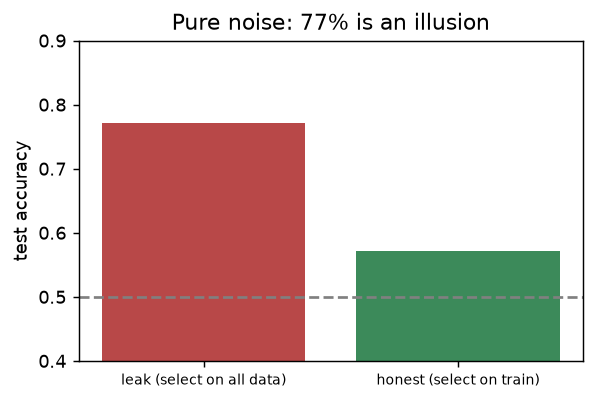

📥 Python 練習ノートブック：ml670_py_practice.ipynb — このページはノートブックの T3の解説です。Jupyter で開いて、同じ名前のセクションを解いてください（自動チェック ✅/❌ 付き）。
①
説明する：何のため？
3文で言えるようにする
モデルの目的は「まだ見ていないデータを当てる」ことです。訓練で使ったデータを同じ点数で測ると、暗記しただけでも高得点になります。だから評価用のデータを隠してとっておきます。
データ漏れ（leakage）：テストデータの情報が、訓練のどこかに混ざること。評価が実力より良く見えますが、新しいデータでは当たりません。
📝 3文のお手本
モデルは見たことのないデータで評価しないと、暗記か実力か区別できないので、訓練とテストに分ける。データ漏れはテストの情報が訓練に混ざることで、点数が実力より良く見えてしまう。標準化や特徴量選択は分割のあとで、訓練データだけで fit する。
②
手で計算する
小さなデータを紙と電卓で
200 件を test_size=0.25 で分けると、テストは 200 × 0.25 ＝ 50 件、訓練は 150 件。
n = 200 n_test = int(round(n * 0.25)) print('訓練', n - n_test, '/ テスト', n_test)
訓練 150 / テスト 50
③
自分で作る
NumPy で書いて、scikit-learn と一致させる
my_train_test_split は、乱数で並べ替えた番号の先頭をテスト、残りを訓練にします。
def my_train_test_split(X, y, test_size=0.25, seed=0): n = len(X) idx = np.random.default_rng(seed).permutation(n) n_te = int(round(n * test_size)) te, tr = idx[:n_te], idx[n_te:] return X[tr], X[te], y[tr], y[te] def run_once(leak, seed): if leak: # ✗ 全データを見て特徴量を選んでから分割 Xs = SelectKBest(f_classif, k=10).fit_transform(X_noise, y_noise) a, b, c, d = train_test_split(Xs, y_noise, test_size=0.3, random_state=seed) else: # ○ 分割してから、訓練データだけで特徴量を選ぶ a, b, c, d = train_test_split(X_noise, y_noise, test_size=0.3, random_state=seed) sel = SelectKBest(f_classif, k=10).fit(a, c) a, b = sel.transform(a), sel.transform(b) return LogisticRegression(max_iter=1000).fit(a, c).score(b, d)
X = np.arange(40).reshape(-1, 1); y = np.arange(40) a, b, c, d = my_train_test_split(X, y, 0.25, seed=0) print(len(a), len(b), '重複なし:', len(set(a.ravel()) & set(b.ravel())) == 0)
30 10 重複なし: True
データ漏れの実験
特徴量 1000 個も答えも完全なランダム。本当は 50% しか当てられないはずです。「全データで特徴量を選んでから分割」と「分割してから選ぶ」で正解率を比べます（20 回の平均）。
leaky = np.mean([run_once(True, s) for s in range(20)]) honest = np.mean([run_once(False, s) for s in range(20)]) print(f'漏れあり {leaky:.3f} / 漏れなし {honest:.3f}')
漏れあり 0.772 / 漏れなし 0.572
import matplotlib.pyplot as plt fig, ax = plt.subplots(figsize=(5, 3.2)) ax.bar(['leak (select on all data)', 'honest (select on train)'], [leaky, honest], color=['#B84848', '#3C8A5A']) ax.axhline(0.5, color='gray', ls='--'); ax.set_ylim(0.4, 0.9); ax.set_ylabel('test accuracy') ax.set_title('Pure noise: 77% is an illusion') plt.xticks(fontsize=8)

ランダムなデータなのに、漏れありだと約77%「当たる」。
答えがランダムなのに 77% 当たるのは、特徴量を選ぶときにテストの答えも見ていたから。1000 個もあれば、たまたま答えと合う列が必ずあります。
④
白紙で再現する・よくある間違い
次の日に、見ずにもう一度
④ 次の日にやること：ノートブックの「④ 白紙で再現」で、名前の後ろに
_2 が付いた関数を、③を見ずに書き直します。10分以内に ✅ が揃えば合格です。my_train_test_split_2・run_once_2⚠️ よくある間違い
- 標準化・欠損補完・特徴量選択を分割の前に全データでやる
- テストの点数を見ながらモデルやパラメータを何度も選び直す（テストが訓練の一部になる）
- クラスの比率が偏るデータで
stratifyを付けない
❓ 確認：分割のあとに標準化を fit するのは、訓練・テストのどちら？
訓練データだけ。テストは同じ平均・SD で transform するだけ。
❓ 確認：テストの点数を見て、モデルを選び直してよい？
良くない。選び直すたびにテストの情報が混ざる。選ぶのは検証データか交差検証で行い、テストは最後に1回だけ使う。